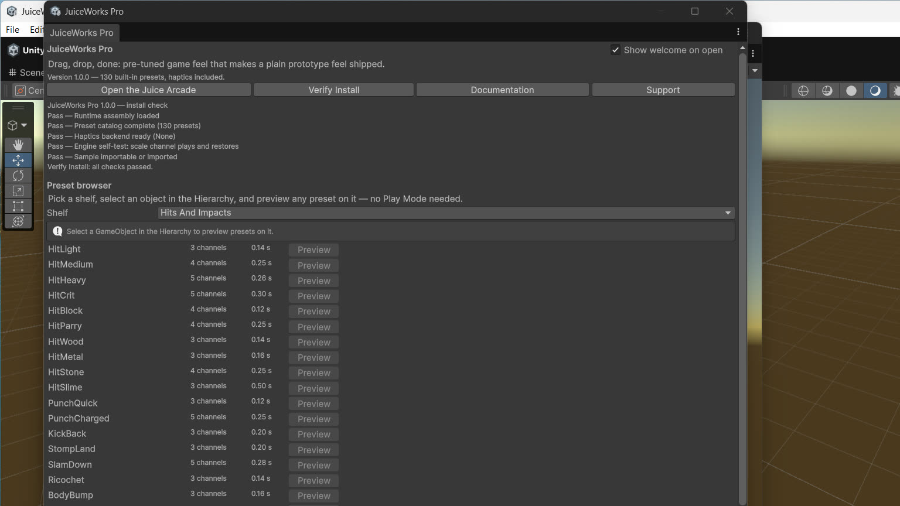

Editor Preview and Inspectors
The home window, Verify Install, edit-mode preview, and the two authoring inspectors.

The home window
Open it at Tools > ByteLura > JuiceWorks Pro. Top to bottom:
- Header (welcome block). Product name, the outcome line, the version line with the preset count, and the quick-action row: Open the Juice Arcade, Verify Install, Documentation, Support. The welcome block is expanded on first open and remembers your toggle afterwards. Verify Install's report prints into the header as one plain-language line per check.
- Preset browser. A shelf picker for the nine categories, then one row per preset: name, channel count, duration, and a Preview button. A Stop preview control appears while a preview runs.
- Genre packs. The three packs with their preset counts and one-line promises.
- Haptics test bench. A pattern name field and Send pattern, the active backend's name, the built-in pattern names, and the honest editor note: the Editor is silent; patterns buzz on a connected Android device.
- Footer. Version and publisher line, plus the re-tuning promise: every preset can be copied into your own preset asset; nothing is locked.
A sub-item, Tools > ByteLura > JuiceWorks Pro / Verify Install, runs the same check from the menu.
Verify Install
Verify Install confirms the runtime assembly, the preset catalog's completeness, the haptics backend, and a live engine self-test — a scale channel plays and restores on a throwaway object in Edit Mode. It is idempotent and safe to re-run at any time. There is no other setup step for the engine: no folders, no manager objects, no ScriptableObjects to create by hand.
Edit-mode preview
Preview plays the real channels on the real selected target, in the Editor, without entering Play Mode — select a sprite, preview HitSlime or LastHitSlowmo on it, and judge the shape of the effect before wiring anything. Stop a preview early and the target's transform and color return to exactly their pre-preview values. Preview timing comes from the editor update loop, so final feel is judged in Play Mode or on a device (Honest Limits).
With no GameObject selected, the browser shows its one-line empty state and preview buttons are disabled — the action offered is the selection itself.
The preset inspector
Selecting a preset asset opens its inspector: name, shelf, haptic pattern name, time mode, and the channel list. Channels can be added, removed, and reordered there — all seven channel types are available, and the fields shown match each channel's tuning surface (Channels & Easing). This is the authoring surface for your own presets and the place to copy a built-in's values into one.
The sequence inspector
Selecting a sequence asset opens the timeline inspector described on the Sequencer page: one lane per step, bars in real seconds, with each step's preset, delay, wait-for-previous, and repeat editable in place.